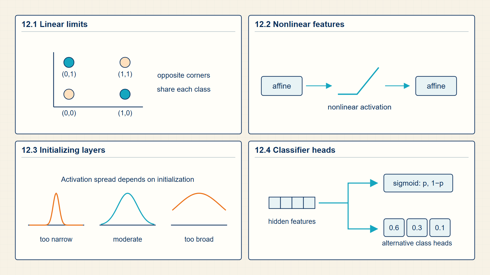
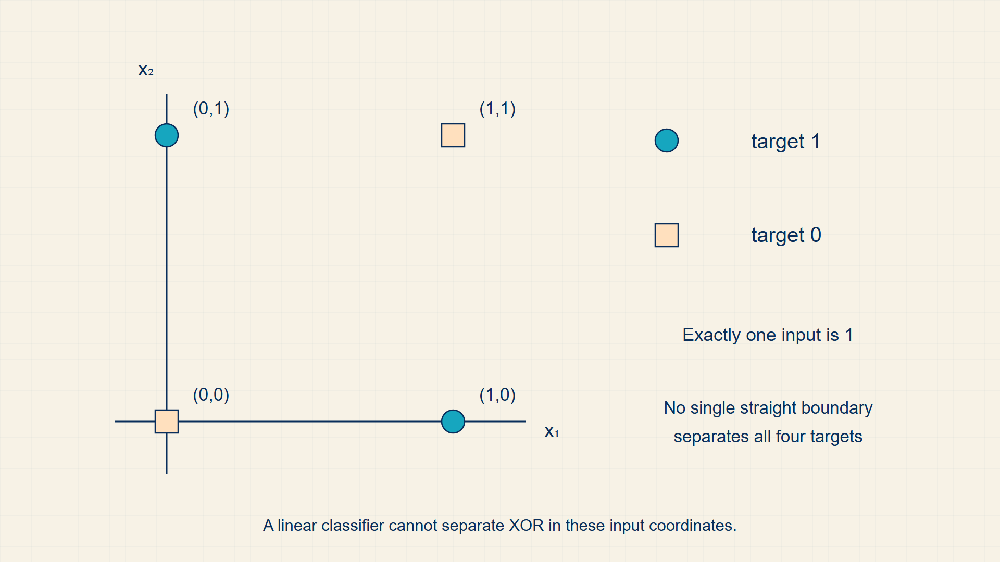

12 Activation Functions: Bending Decision Boundaries with MLPs
One linear boundary cannot solve every classification pattern. Hidden layers first transform the input, then let a final linear classifier separate the transformed features.
A linear classifier can only split inputs with one flat boundary. Hidden layers and activation functions transform the representation so later linear layers can separate patterns such as XOR.
In code, torch.nn.Linear, ReLU, and Sequential compose affine maps and activations; the classifier still emits logits consumed by the Chapter 8 loss functions.

12.1 The Limits of Linear Separation and the XOR Problem
Logistic regression is a single trainable affine map plus a probability head. A neural classifier keeps the same loss-and-gradient skeleton but learns intermediate representations before the final classifier.
- Hidden representation: A learned feature vector produced inside the model.
- Classifier head: The final layer that maps a representation to class logits.
- Feature learning: Learning the representation rather than fixing it by hand.
- Activation function: A nonlinear map applied after a linear score \(w^\top x+b\), such as ReLU, sigmoid, tanh, or GELU.
Logistic regression introduces parameters, logits, loss, gradients, and updates without the extra complexity of multiple layers. The next sections keep that computation and add a learned hidden representation before the final head.
When the course moves to embeddings, RNNs, and transformers, the last operation often remains a linear projection to logits followed by cross-entropy.
XOR demonstrates the limit of one linear decision boundary. A hidden layer first transforms the input representation, after which a linear output layer can separate the transformed points.
The hidden layer needs an activation function because stacked affine maps without a nonlinearity collapse to one affine map. ReLU is the simplest example: negative hidden scores become zero and positive scores pass through.
A single linear score \(w^\top x+b\) splits the feature space with one flat hyperplane. If positive examples occupy opposite diagonal corners, no single plane can separate them from the negative corners.
A hidden layer solves this by mapping the inputs to new intermediate coordinates where the classes become linearly separable. Non-linear activation functions are required between layers so the composition does not collapse to a single linear layer.
XOR shows that one linear boundary cannot separate every useful pattern. A hidden layer first changes the input representation, then a final linear layer classifies that new representation.
12.2 Bending Feature Space with Non-Linear Activations
A hidden layer lets a classifier build intermediate features before the final decision score is computed.
- Preactivation: The vector of affine scores produced before an activation function is applied.
- ReLU: The activation \(ReLU(a)=max\)(0,a), applied independently to every coordinate.
- Activation vector: The vector produced after applying the activation to every preactivation coordinate.
A hidden layer is an intermediate representation learned before the output layer.
The new object is an activation vector. The first affine map creates hidden coordinates, a nonlinear function bends the feature space, and the next affine map turns the hidden representation into logits.
This is why multilayer networks can solve patterns such as XOR that a single linear boundary cannot separate. The cost is that the computation now has intermediate tensors whose gradients must be propagated backward through each local operation.
A hidden layer first applies its weight matrix and bias to the input, producing a preactivation vector. The activation function then applies the same scalar rule to every coordinate. For ReLU, a negative coordinate becomes zero while a positive coordinate is retained.
The nonlinearity changes what later layers can express. Without it, consecutive affine maps collapse into one affine map, so the model still has only one linear boundary in the original input coordinates. The displayed equation below shows that collapse explicitly.
A nonlinear hidden representation changes the geometry of the problem.
Hidden layer:
\[ h=\phi(W_{1}x+b_{1}) \tag{12.1}\]
where \(W_{1}\) is input-to-hidden weight matrix; φ is nonlinear activation.
The affine map forms hidden scores; the nonlinearity changes the representation so a final linear head can separate patterns that were not linearly separable in input space.
The hidden layer is a learned feature transformation, not just another label head.
The classifier head maps hidden features to logits.
MLP classifier:
\[ z=W_{2}h+b_{2} \tag{12.2}\]
Neural classification optimizes empirical cross-entropy over model parameters.
Training objective:
\[ \min_{\theta}\frac{1}{n}\sum_{i}\operatorname{CE}\!\left(\operatorname{softmax}(f_{\theta}(x_{i})),y_{i}\right) \tag{12.3}\]
ReLU converts each preactivation coordinate into the corresponding hidden activation.
ReLU activation:
\[ h_{i}=\max(0,a_{i}) \tag{12.4}\]
where \(a_{i}\) is preactivation for hidden coordinate i; \(h_{i}\) is activation after ReLU.
ReLU keeps positive evidence and clips negative evidence to zero. Applying it between affine maps prevents the composition from reducing to a single affine map.
The index i selects one hidden coordinate, so the rule is applied independently across the vector.
Two affine maps with no intervening activation are equivalent to one affine map.
Two affine maps without an activation:
\[ W_{2}(W_{1}x+b_{1})+b_{2}=(W_{2}W_{1})x+(W_{2}b_{1}+b_{2}) \tag{12.5}\]
where \(W_{1}\),\(W_{2}\) is consecutive weight matrices; \(b_{1}\),\(b_{2}\) is consecutive bias vectors; x is input vector.
Distribute \(W_{2}\) across the first affine expression and collect the terms that multiply x and the terms that do not.
The right side has one combined weight matrix and one combined bias vector.
Example: Turning hidden scores into a nonlinear representation
Use one hidden layer whose affine calculation produces two hidden scores.
Hidden scores:
\(a = (-2,3)\)
Apply ReLU coordinatewise:
\(h_{1} = \max(0,-2) = 0\)
\(h_{2} = \max(0,3) = 3\)
\(h = (0,3)\)
Final linear score:
With output weights (1,-1) and zero bias, \(z = 1·0 + (-1)·3 = -3\)
The output layer is linear in h, but h itself is a nonlinear transformation of the original input.
An activation changes each hidden score before the next layer uses it, allowing stacked layers to represent curved decision regions. Several hidden units together form a multilayer perceptron.
12.3 Classifying Fixed-Width Text Representations
Once text is represented as vectors, the same neural classifier can sit on top of bag-of-words (BoW) features, pooled embeddings, or transformer hidden states. Chapters 13 and 14 explain how token embeddings are learned; here, \(h\) can be treated as any fixed-width vector supplied to the classifier.
Feature representation is a vector supplied to the classifier head after token counts, pooling, or contextual processing.
The model changes the representation before classification. That link leads from logistic regression to embeddings and attention.
Text classification uses the same final computation whether the input representation came from a bag-of-words matrix, pooled token embeddings, or a transformer hidden state. The representation supplies the coordinates; the classifier head supplies the task-specific weights and bias; the probability function and loss evaluate the result.
A classifier head consumes a fixed-width learned representation and does not depend on how that representation was produced. Its input width must match the encoder output width, allowing the same affine scoring rule to follow pooling, recurrence, or transformer encoding.
The AG News assignment connects the earlier chapters into one classifier. Subword tokenization creates token sequences, and Word2Vec supplies token vectors. Next, pooling produces one fixed-width article vector, and an MLP maps that vector to four class logits. Cross-entropy compares those logits with the news label.
This pipeline separates representation learning from classifier learning. The Word2Vec vectors may be frozen while the MLP trains, or both components may be updated in a fully neural pipeline. In either case the classifier head receives a batch matrix with one row per article.
A text classifier is a composition of earlier computations rather than a new kind of mathematics. Tokenization produces integer IDs, an embedding layer turns IDs into vectors, pooling or attention reduces a sequence to a document representation, and a classifier head produces the class logits.
The architecture and the task are separate choices. Mean pooling with an MLP can classify a news article, while a transformer encoder can classify the same article by producing a richer contextual representation. In both cases the final logits, cross-entropy loss, gradient calculation, and evaluation metrics follow the earlier chapters.
A classifier head maps one feature representation h to a logit z.
Text classifier head:
\[ z=W_{c}h+b_{c} \tag{12.6}\]
where h is feature vector supplied by the text representation; \(W_{c}\) is classifier weight matrix; \(b_{c}\) is classifier bias; z is output logit before the probability function.
The head is the affine score from logistic regression applied after a learned text representation rather than directly to raw features.
Changing the encoder changes h; changing the task head changes \(W_{c}\) and \(b_{c}\). The loss connects both parts during training.
Example: Text classifier head
For \(h=(0.6,0.2)\), \(W_{c}=(2,-1)\), and \(b_{c}=0.1\), the logit is \(z=2(0.6)-0.2+0.1=1.1\), the probability is \(\operatorname{sigmoid}(z)=0.750\), and the positive-label loss is \(-\log(0.750)\approx0.288\).
The following runnable PyTorch example receives one two-coordinate representation, sets a binary linear head to the same weights used in the hand calculation, and prints the resulting logit and stable binary cross-entropy loss. It does not build the embedding or sequence encoder that would normally produce \(h\).
Code example: PyTorch classifier head over a text representation
import torch.nn as nn
import torch
import torch.nn.functional as F
h = torch.tensor([[0.6, 0.2]]) # [batch, features]
head = torch.nn.Linear(2, 1)
with torch.no_grad():
head.weight[:] = torch.tensor([[2.0, -1.0]])
head.bias[:] = 0.1
logit = head(h)
label = torch.ones_like(logit)
loss = F.binary_cross_entropy_with_logits(logit, label)
print(logit, loss)The head returns one logit with dimensions [1, 1]; the positive label and stable binary cross-entropy produce the scalar training objective.
The representation is supplied directly. A complete text model would obtain it from embeddings, pooling, recurrence, or transformer attention.
An MLP repeatedly maps features to hidden activations and then to logits. Embedding tables supply learnable input features for discrete tokens.
12.4 Visualizing Linear Separation Limits and Hidden Layer Warping
Hidden nonlinear transformations can separate patterns that one linear boundary cannot.
A linear classifier cannot solve XOR because no single straight boundary separates the positive and negative examples.

The hidden layer changes the representation before the final classifier. That is the mathematical reason neural networks are more than stacked logistic-regression heads.
Neural networks become useful by changing representations before applying a classifier head.
Embedding tables supply the trainable token vectors used by sequence models.